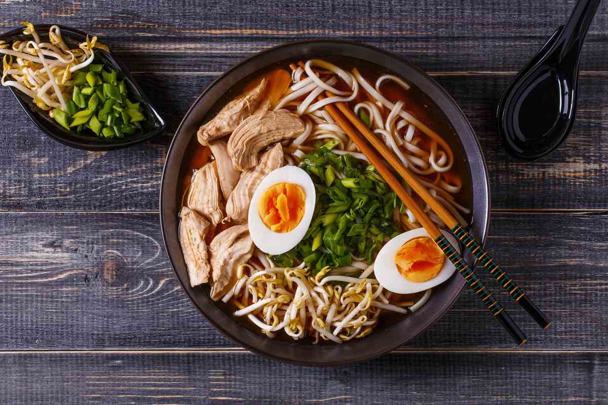

Japon
Inicio
Sushi: Arroz avinagrado con diferentes ingredientes, como pescado, marisco o vegetales
Ramen: Fideos chinos en caldo, con carne, huevo y verduras.
Tempura: Mariscos y verduras rebozados y fritos.
Okonomiyaki: Tortilla japonesa con carne, verduras y salsa
Yakitori: Brochetas de pollo a la parrilla
Gyoza: Empanadillas japonesas rellenas de carne y verduras
Omu-raisu: Sándwich de arroz frito con huevo revuelto
Yakisoba: Tallarines fritos con verduras, carne y salsa
